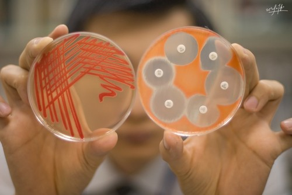

Projects
Molecular origami – The art of protein folding
Origami is the ancient Japanese art of paper folding – simple movement of paper into various shapes and forms some of which have the potential of achieving astonishing complexity. Similarly to the origami of paper, nature has taken polypeptides and folded them into very complicated structures. Protein folding is the conclusive step of the information transfer from DNA to the proteins. Failure of a protein to fold correctly can lead to the formation of aggregates and is a probable cause of an increasing number of disorders such as Alzheimer’s and Parkinson’s disease. Despite the fact that protein folding has been one of the central subjects of structural biology for almost 50 years, the mechanisms of the folding process continue to be a source of important and exciting questions.
The challenge of this project is to study the mechanism of protein folding of a small protein involved in oxygen transport – myoglobin. Different biochemical techniques will be used in order to purify and characterize the protein. Spectroscopic methods (UV/VIS) will be utilized to examine the influence of various factors such as denaturants, temperature and crowding agents to myoglobin folding process. Aside from the practical knowledge gained throughout the project, students will get acquainted with the basics of protein science, biochemistry and physics that lies beneath the spectroscopic methods used.
Antonija Burcul
University of Zagreb, Croatia
Antonija is a 3rd year Bachelor student of chemistry at the University of Zagreb. She participated at the Summer School of Science as a high school student in 2009 and as a project leader in 2011. Antonija is interested in different topics in biophysics and the application of spectroscopic and computational techniques in studying protein dynamics. Apart from science she enjoys cooking, exploring different cuisines and travelling around the world.
The dark side of probiotics
The development and spread of antibiotic resistance in bacteria is an emerging public health issue worldwide. As new superbugs occur, there is an increasing demand for limiting the spread of antibiotic resistance traits among bacteria. Normal gut flora is our important partner in processes of digestion and protection against pathogens. For example, Escherichia coli, which is our normal gut inhabitant, produces vitamins and together with other bacteria competes with pathogens for space and food, therefore limiting pathogen growth. In conditions of imbalance, some of them, so called opportunistic pathogens, can take advantage of the newly occurred situation by causing diarrhea, urinary tract infections or even septicemia. Benefits of probiotics, especially bacteria Lactobacillus (LGG) is well acknowledged, but their less beneficial features are becoming a matter of debate. For instance, they might be resistant to some antibiotics, which could represent a big problem as the consumption and interest in probiotic products is increasing.
In this project, participants will try to address some of the striking questions regarding antibiotic resistance development and spread in bacteria. More precisely, we will mimic processes of in vivo antibiotic resistance traits transfer between representatives of normal gut flora, probiotics and gut pathogen. Students will learn the basic technique of bacterial cultivation and biochemical and molecular methods of their identification. Furthermore, they will use molecular techniques and bioinformatics software to engineer vectors that express antibiotic resistance and fluorescent reporter genes. To enable transfer of these vectors between bacteria, they will implement methods of chemical transformation, electroporation and conjugation. In the end, successful transformants will be screened and selected by using various molecular microbiology techniques.
Petra Pusic
University of Rijeka, Croatia
Petra graduated molecular biology at Faculty of Science, Zagreb. She is currently working as a research and teaching assistant at School of Medicine, Rijeka. Her current research topic is experimental legionellosis. When she is not working in the lab or trying to transfer her love and enthusiasm for science and microbiology to her students, Petra likes to read, travel, learn foreign languages and cook spicy food. Petra participated as a swapshop leader at the Summer School of Science in 2007 and 2008, and as a project leader in 2010.
Modeling plant geometry
Try to accurately describe the shape of the table at which you are sitting. You might say, "A rectangular slab with four perpendicular legs". Now go outside, take a look at the nearest tree, and see if you can do something similar. Doesn't quite work out that easily, does it? While trees and plants seem to be at the bottom of the complexity scale amongst all of Nature's masterpieces, both their shape and their growth are actually quite complex. Trying to describe them with regular Euclidean geometry is doomed to fail; rather, a fractal model is needed. L-Systems - systems that involve rewriting symbols in a string - are an example of such a model, and even simple systems can generate complex patterns. These kinds of systems are used in the graphics industry, such as in computer games or computer-generated imagery in movies.
During this project, students will explore the world of L-Systems in order to try and create models of known plants and trees. This involves an investigation in the theory behind L-Systems, some of the characteristics of fractals, turtle graphics, and computer graphics and programming in general. The models will be implemented on a computer, and should generate vivid and tantalizing pictures. They will be asserted against real life facts, which requires collection of data: apart from theoretical computerwork, students will venture into the fields and forests in order to acquire accurate measurements of local trees and plants.
Renan Gross
Israel Arts and Science Academy, Israel
Renan Gross is an enthusiastic young scientist from Israel. He is interested in all fields of science, from mathematics and computers to physics, informatics and biology. During his spare time he writes about science, politics and life, plays the piano, and cycles fervently through the streets of Tel Aviv. Renan participated as a swapshop leader in the Summer School of Science 2011.
Neuron as an electrical circuit
Ever wondered how the pain of stepping on a LEGO brick comes from your foot to your brain? Sensations are propagated through nerves as chemical signals – between two cells, and as electrical signals – along a single nerve cell. An electrical signal is a change in voltage of the cell membrane, which travels along the long cable-like part of the nerve cell - axon. Cell membrane can therefore be imagined as an electrical circuit. Such model of a nerve cell is a powerful tool in investigation of a nerve conduction block – the occurrence when specific stimuli on the membrane can block the propagation of other signals through the nerve cell. It has been shown, by this kind of a nerve cell model and experimentally on animals, that specific electrical stimuli can block other signals, completely and reversibly. Probable medical applications are obvious: if we can stop the signal through the nerve, we can stop the pain; or otherwise control nervous system actions. This method of a nerve block, if shown to be successful, may be invaluable to cases of spasticity in spinal cord injury or multiple sclerosis, or to chronical painful conditions, such as cancer pain, in cases resistant to pharmacological treatment.
In this project, participants will use the Hodgkin Huxley model to simulate signal propagation through an axon of a nerve cell. We will develop a computer simulation and use it to examine different kinds of electrical changes in a nerve cell when constant or periodically changing stimuli is applied to the cell. Our final goal will be to investigate the circumstances under which a nerve block is possible. Through this project students should understand how biology, physics and computer science may be inseparable in modern scientific research.

Marija Jankovic
University of Belgrade, Serbia
Marija is 2nd year student of physics at University of Belgrade. She was a participant and now is a student-assistant at physics seminars in Petnica Science Center, Serbia. She was a swapshop leader at the Summer School of Science in 2011 and she decided to come back this year for a new experience. Marija’s first encounter with neurophysiology was at International science camp 2010 at XLAB, Gottingen, Germany. Her interests mostly include application of physics methods and programming in a variety of science fields, and science popularization.
Scientifically approved prediction methods
Ever wondered how machines can predict future events or things like your favorite song? The answer to this question is machine learning, a branch of artificial intelligence. This scientific discipline is concerned with the design of algorithms that allow computers to evolve behaviors based on empirical data. One of the most popular machine learning methods are neural networks, which imitate human brain, and two statistical methods - support vector machines and decision trees. There are a lot of applications for machine learning, such as detecting diseases, computer vision, predicting prices on stock markets. Detecting one person's taste is a typical machine learning problem: your list of favorite songs is used to recognize harmonical patterns that together make your taste for music.
In this project, we will make a program that will learn all about your music preferences and, among a large set of songs, choose the ones that best suit your taste. For this we will use the programming language Python and one very intuitive machine learning method based on decision trees, called Random Forest. Also, we will study some parts of music theory to process our data and make it more knowledgeable. We will learn how to choose and prepare data, but also how to deal with a large amount of data. At the end, you will learn some statistical evaluation techniques which you can use to measure the efficiency of our method. We will try to keep the solution of the problem at a very general level, so, once you have implemented it, you can use it for other machine learning problems as well!
Sebastijan Dumancic
University of Zagreb, Croatia
Sebastijan is a third year student of computer science at the University of Zagreb. His main interests are computer applications and mathematical modeling in other sciences, such as bioinformatics and computational science. He is very active in student organization “Young gifted mathematicians “Marin Getaldić” and their Young Mathematicians Summer Camp. One of his passions is music. He has been playing French Horn for 9 years and he has been a member of WYWOP youth orchestra in Austria for 2 years.